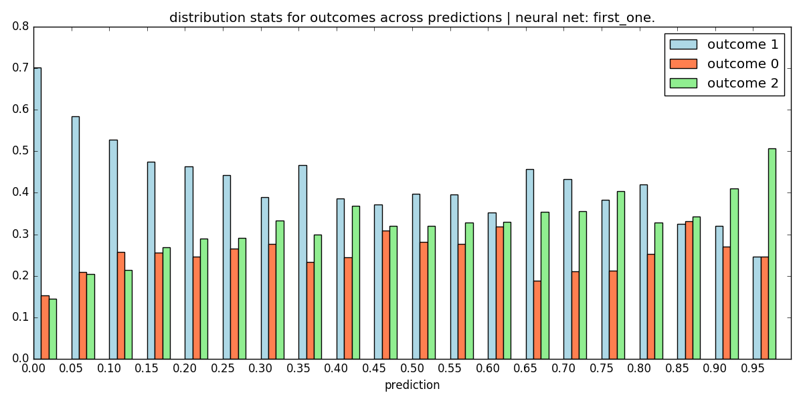
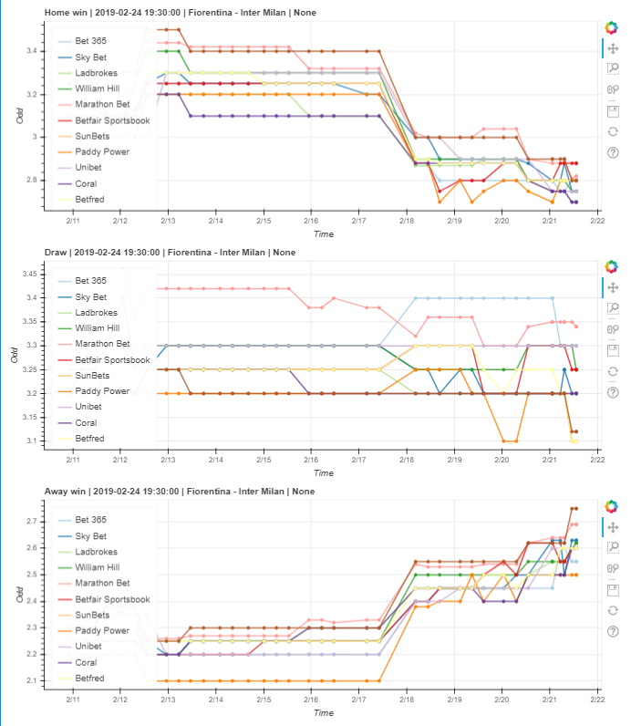

An end-to-end Machine Learning project, for forecasting outcomes of football matches. It includes the stages of: data collection, cleaning, storage, processing, predictive modeling, model evaluation, statistical analysis and production deployment.
This page describes an older version of the project, while a new one is currently in development.
I initially started this project in 2016 with the aim to learn Machine Learning, and all the other steps that come before and after it. Therefore, most of the code is built "from scratch" i.e., I didn't use any ML frameworks, or data preprocessing, or statistical packages, but tried to code the needed bits in Python. For example, I created this small NeuralNet project to train a neural network. The forward and back-propagation functions, gradient descent and the rest are coded using the instructions in the famous Machine learning course by Andrew Ng. Of course, results were really sub-optimal, but the efforts paid off because of the things learned!
Data ingestion and storage
Using available datasets on the Internet is not fun. I started scraping football data off a few websites back in 2016, and by now there's quite a lot. It's mainly data on "matches" - goals scored / allowed, statistics, and different betting odds.
I use Python for the web scraping with a headless Chrome browser, and BeautifulSoup for processing the HTML. Scripts scraping different websites are started as separate processes, which get activated in every ~1 hour. This is active 24/7. As new matches arrive, data is initially cleaned up, and saved in MongoDB.
Data preprocessing
In this old Learnbet version there was no data pipe to extract transform and load from MongoDB to the ML model, but it would've been handy. For each separate model, I had to manually create a new Python script to gather data from the DB, apply the needed functions, and output a matrix-like data structure for the model's inputs and targets.
Modeling
The modeling part was basically done from scratch, including the neural networks and model evaluation methods. One of the first models I used was predicting a 1 / x / 2 outcome (class) of a match. Then different classes had different accuracy / precision / recall. The following figure shows the distribution of match outcomes and predictions, where predictions around 0 are "home win", 0.5 - "draw", and 1 - "away win".

Later on, after being comfortable with using my neural networks, I continued experimenting with models of the scikit-learn library, such as: support vector machines (SVMs), logistic regression, decision trees and random forests.
Deploying in production
The first few models were built to work as "console" apps. You pass the names of the two playing teams (and an optional date), and get as output the prediction. Later on, I setup a small Flask app access predictions (and other data) on the web, as in the next figure. The web app was first set on GCP, but later on switched to AWS.

Reporting, logging, statistics
As my first end-to-end ML project, I had to monitor the app for things like scrapping crashes and data inconsistencies. Here the logging library of Python came very useful, as all important events across the pipeline were gathered in a single text-based log file.
Monitoring performance is always a good idea. In Learnbet I automated the creation of a few separate reports: model stats (all-time or last n matches), league stats, and team stats.